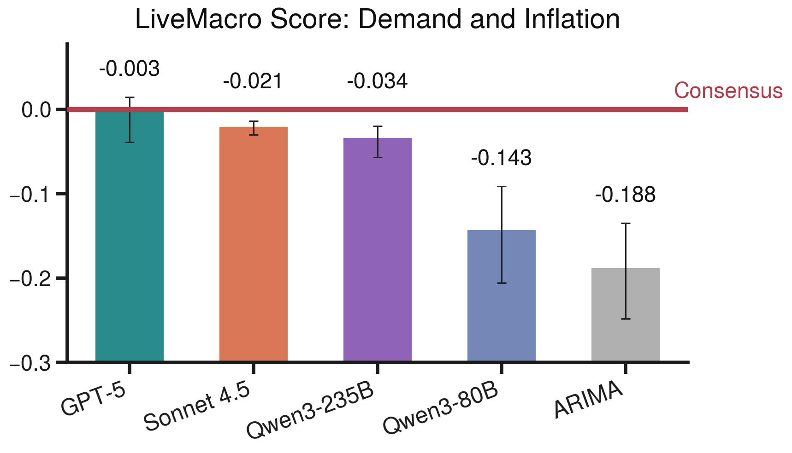
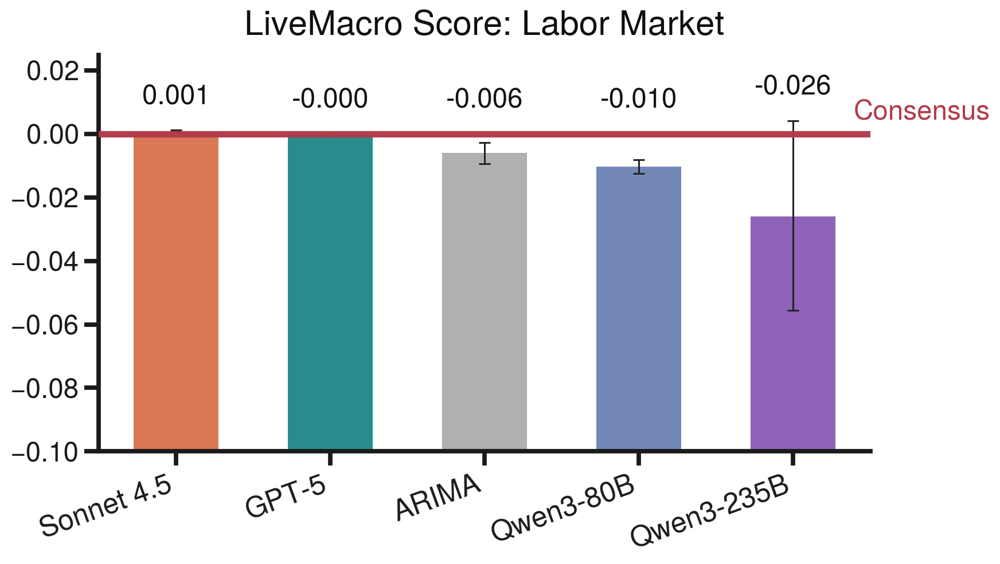
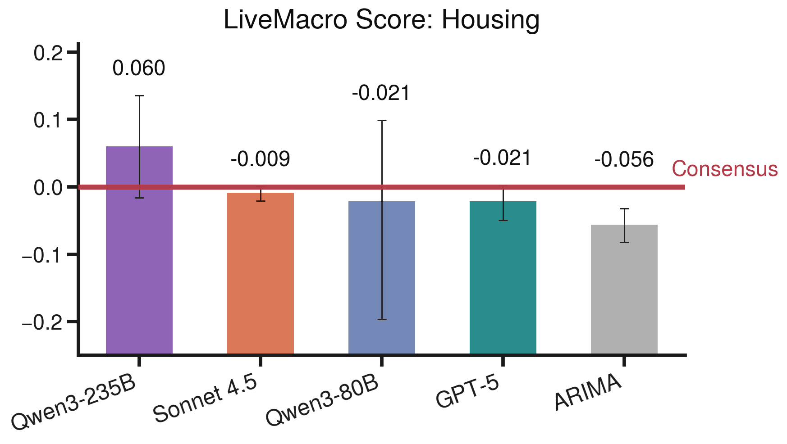
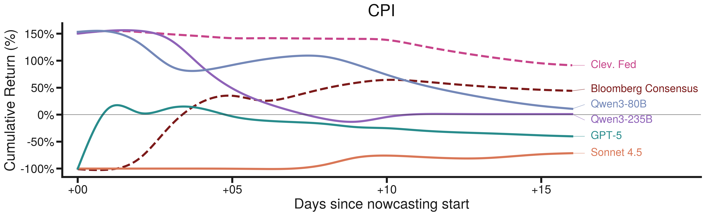
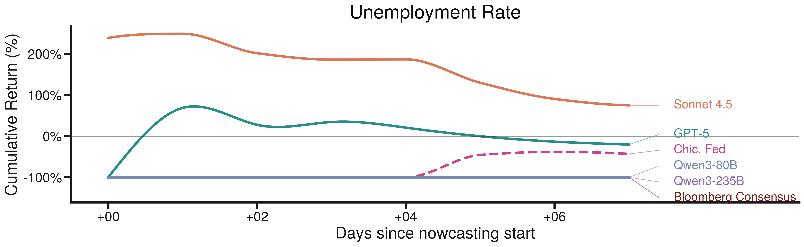

05Results
Over six months of live evaluation, the top LLM agent ties the professional consensus in aggregate — but the aggregate hides sharp heterogeneity across the economy.

Where the skill is: by theme
Decomposing the score by theme shows LLM agents exceed the consensus on Supply and Production and on Housing — plausibly because those themes rest on higher-frequency underlying components (mortgage applications, housing sentiment) that reward intra-window updating. They underperform on Demand and Inflation, consistent with the anchored-expectations regime that protects the consensus on headline inflation. Labor Market clusters near zero for every model, consistent with a signal-to-noise ceiling on the household survey.




LiveBetting: trading against the Fed
On real GDP, four LLM agents finish the window with positive cumulative returns and three beat the Atlanta Fed, with only the New York Fed ahead. On the unemployment rate the leading agent finishes above the Chicago Fed. On CPI, however, the Cleveland Fed and the Bloomberg consensus still lead every LLM agent — a real limitation on indicators where institutional models are tightly tuned to known economic structure.



Case study: watching a belief update
Hourly cadence makes it possible to trace, after the fact, how a single information event enters the agent's information set. GPT-5's March 2026 CPI nowcast sits around 2.7% through early April, then jumps to about 3% inside a tight intraday window on April 8 — a window containing both the EIA Petroleum Status Report (a large gasoline-inventory drawdown) and FOMC minutes flagging upside inflation risk. Both push the same direction, and the revision's magnitude is consistent with a back-of-the-envelope gasoline contribution under BLS expenditure weights.